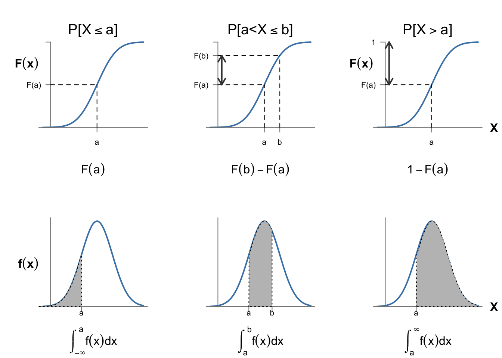
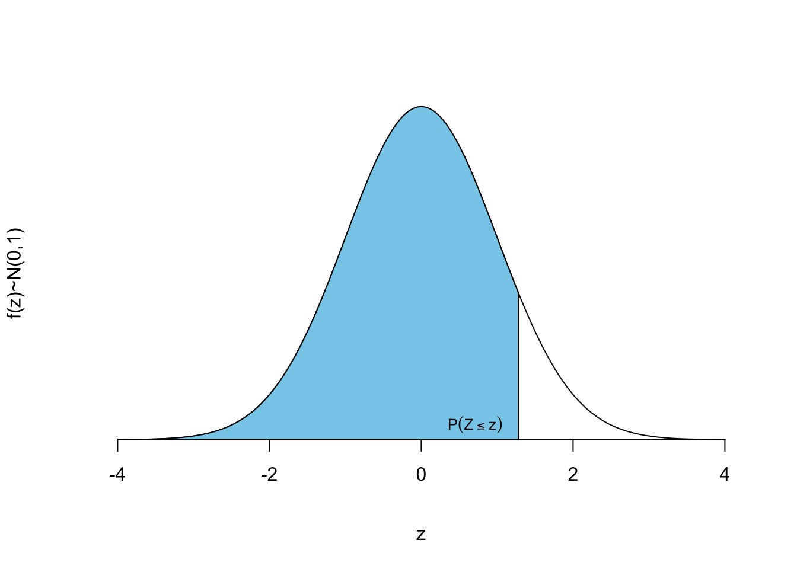

1 Formulario
1.1 Estadística descriptiva univariante
1.1.1 Notación
\(X, Y, ...\): Variables.
\(x_i\):
- En datos individuales: Cada uno de los valores observados de la variable \(X\)
- En datos agrupados: Cada uno de los \(k\) posibles valores de la variable \(X\).
\(n\): Número total de observaciones en la muestra.
\(N\): Número total de observaciones en la población.
\(n_i\): Número de observaciones en la clase \(i\).
\(c_i\): Marca de clase en datos agrupados por intervalos.
\(L_i, i = 0, ..., k\): Límites de los intervalos \((L_{i-1}, L_i]\).
1.1.2 Tablas de frecuencias
\(n_i\): Frecuencia absoluta, número de observaciones en la clase \(i\).
\(f_i\): Frecuencia relativa. \(f_i = \frac{n_i}{n}\)
\(N_i\): Frecuencia absoluta acumulada. \(N_i = \sum\limits_{j=1}^{i}n_j\)
\(N_i\): Frecuencia relativa acumulada. \(F_i = \sum\limits_{j=1}^{i}f_j = \frac{N_i}{n}\)
Número de intervalos en variables continuas:
- Si \(n \leq 100, k\approx\sqrt n\)
- Si \(n > 100, k\approx 1 + \log_2 n\)
\(A\): amplitud de la variable. \(A = x_{max} - x_{min}\)
\(a_i\): Amplitud de la clase \(i\). \(a_i = A/k\)
\(c_i\): Marca de clase. \(c_i = \frac{L_{i-1} + L_{i}}{2}\)
1.1.3 Medidas de tendencia central
Moda: clase más frecuente. \(x_i: n_i = \max_{j=1,...k}\{n_j\}\)
Media aritmética: \(\bar{x}= \frac{\sum\limits_{i=1}^n x_i}{n}\).
- Propiedad: \(Y = a+ bX \implies \bar y = a + b \bar x\)
- En variables discretas agrupadas: \(\bar{x}= \frac{1}{n}\sum\limits_{i=1}^k n_i x_i= \sum\limits_{i=1}^k f_i x_i,\)
- En variables agrupadas en intervalos: \(\bar{x}= \frac{1}{n}\sum\limits_{i=1}^k n_i c_i= \sum\limits_{i=1}^k f_i c_i\)
Mediana: \(\min\limits_{i=1,...n}{x_i}: F_i\geq 0{,}5\)
Media geométrica: \(m_g = \left ( \Pi_{i=1}^n x_i\right)^{\frac{1}{n}}\)
Media armónica: \(H = \frac{n}{\sum\limits_{i=1}^n\frac{ 1}{ x_i}}\)
1.1.4 Medidas de posición
Percentil de orden \(p\): \(P_{p\%} = \min\limits_{i=1,...n}{x_i}: F_i\geq p/ 100\)
Cuartiles: \(Q_1 = P_{25}\); \(Q_3 = P_{75}\)
1.1.5 Medidas de dispersión
Rango o recorrido: \(R = \max\limits_i{x_i} - \min\limits_i{x_i}\)
Desviación media absoluta: \(\mathit{DMA} = \frac{1}{n}\sum\limits_{i=1}^n |x_i-\bar x|.\)
Desviación absoluta mediana: \(\mathit{DAM} = Me |x_i- Me_x|,\; i = 1, \ldots, n.\)
Varianza muestral o cuasivarianza: \(s^2= \frac{\sum\limits_{i=1}^n (x_i- \bar{x})^2}{n-1} = \frac{1}{n-1}\left (\sum\limits_{i=1}^n x_i^2 - n \bar x^2\right )\)
Varianza poblacional: \(\sigma^2= \frac{\sum\limits_{i=1}^N (X_i- \mu)^2}{N} = \frac{1}{N} \sum\limits_{i=1}^n X_i^2 - \mu^2\)
Desviación típica muestral o cuasidesviación típica: \(s= \sqrt{s^2} = \sqrt{\frac{\sum\limits_{i=1}^n (x_i- \bar{x})^2}{n-1}} = \sqrt{\frac{1}{n-1}\left (\sum\limits_{i=1}^n x_i^2 - n \bar x^2\right )}\).
Propiedad de la varianza: \(Y=a+bX \implies s_y^2=b^2s^2_X\)
Tipificación: \(Z = \frac{X-\bar x}{s} \implies \bar z = 0; s^2 = 1\)
Coeficiente de variación: \(\mathit{CV} = \frac{s}{|\bar x|}\)
Rango intercuartílico: \(IQR = Q_3 - Q_1\)
1.1.6 Medidas de forma
- Coeficiente de asimetría: \(\gamma_1 = \frac{m_3}{s^3}\)
- \(m_3 = \frac{1}{n}\sum\limits_{i=1}^n(x-\bar x ) ^3\)
- Coeficiente de curtosis (apuntamiento): \(\gamma_2 = \frac{m_4}{s^4}-3\)
- \(m_4 = \frac{1}{n}\sum\limits_{i=1}^n(x-\bar x ) ^4\)
1.2 Estadística descriptiva bivariante
1.2.1 Notación
\(X, Y, ...\): Variables.
\(x_i\), \(y_j\): Cada uno de los \(k\) posibles valores de la variable \(X\).
\((x_i, y_i)\): Cada uno de los \(n\) pares de valores observados.
\(n\): Número total de observaciones en la muestra.
\(n_i\): Número de clases de la variable \(X\).
\(n_j\): Número de clases de la variable \(Y\).
\(n_{ij}\): Número de observaciones en la clase \(i\) de la variable \(X\) y en la clase \(j\) de la variable \(Y\).
1.2.2 Tablas de frecuencias
\(n_{ij}\): Frecuencia absoluta conjunta, número de observaciones en la clase \(i\) de la variable \(X\) y en la clase \(j\) de la variable \(Y\).
\(f_{ij}\): Frecuencia relativa conjunta. \(f_{ij} = \frac{n_{ij}}{n}\)
Frecuencias marginales de \(X\):
- Absolutas: \(n_{i\cdot} = \sum\limits_{j = 1}^{n_j}n_{ij}\)
- Relativas: \(f_{i\cdot} = \sum\limits_{j = 1}^{n_j}f_{ij}\)
Frecuencias marginales de \(Y\):
- \(n_{\cdot j} = \sum\limits_{i = 1}^{n_i}n_{ij}\)
- \(f_{\cdot j} = \sum\limits_{i = 1}^{n_i}f_{ij}\)
Frecuencias condicionadas:
- \(f_{x_i|y=y_j}=\frac{n_{ij}}{n_{·j}}.\)
- \(f_{y_j|x=x_y}=\frac{n_{ij}}{n_{i·}}.\)
Independencia: Si \(f_{ij} = f_{i.}\cdot f_{.j} \;\forall i, j\), entonces las variables \(X\) e \(Y\) son independientes.
1.2.3 Covarianza y correlación
Covarianza poblacional:
- Definición: \(\sigma_{xy} = \frac{1}{N} \sum\limits_{i=1}^n(X_i-\bar X)(Y_i-\bar Y)\)
- Cálculo abreviado: \(\sigma_{xy} = \frac{1}{N} \sum\limits_{i=1}^N(X_i \cdot Y_i) - \bar X \cdot \bar Y\)
Covarianza muestral:
- Definición: \(s_{xy} = \frac{1}{n-1} \sum\limits_{i=1}^n(x_i-\bar x)(y_i-\bar y)\)
- Cálculo abreviado: \(s_{xy} = \frac{1}{n-1} \left ( \sum\limits_{i=1}^n(x_i \cdot y_i) - n \cdot \bar x \cdot \bar y \right )\)
Coeficiente de correlación lineal: \(r_{xy}=\frac{s_{xy}}{s_x \cdot s_y}\)
Matriz de covarianzas (caso bivariante):
\[\mathbf{S} = \left [\begin{array}{cc} s^2_x & s_{xy}\\ s_{xy} & s_y^2 \end{array}\right ]\]
1.2.4 Regresión lineal simple
Recta de regresión: \(y=a+bx\)
- \(b = \frac{s_{xy}}{s_x^2}\)
- \(a = \bar y - b \bar x\)
- \(b = \frac{s_y}{s_x}r_{xy}\)
Predicción de nuevos valores: \(\hat{y}_{n+1} = a + bx_{n+1}\)
Residuos: \(\varepsilon_i=y_i - \hat{y}_i = y_i - (a+bx_i)\)
Varianza residual: \(s_\varepsilon^2= \frac{1}{n}\sum\limits_{i=1}^n \varepsilon_i^2\)
- \(\frac{s_\varepsilon^2}{s_y^2}=(1-r_{xy}^2)\)
Coeficiente de determinación: \(R^2 = 1- \frac{s_\varepsilon^2}{s_y^2} = r^2_{xy}\)
1.3 Probabilidad
1.3.1 Notación
- \(A, B, \ldots\): Sucesos
- \(\omega\): Suceso elemental
- \(\Omega\): Espacio muestral
- \(\emptyset\): Suceso imposible
- \(A^c\): Suceso complementario del suceso \(A\)
1.3.2 Definiciones
- Unión de sucesos: \(A \cup B\): Ocurre \(A\) o Ocurre \(B\), o los dos
- Intersección de sucesos: \(A \cap B\): Ocurre \(A\) y Ocurre \(B\)
- Sucesos disjuntos o mutuamente excluyentes, o incompatibles: \(A \cap B = \emptyset\)
- Partición del espacio muestral: Colección de sucesos \(A_1, A_2, \ldots \in \Omega\) que cumplen:
- \(A_1, A_2, \ldots: \quad A_i \subset \Omega \; \forall i\)
- \(A_i \cap A_j = \emptyset \; \forall i \neq j\),
- \(\displaystyle \underset{i}\bigcup A_i = \Omega\).
- Sigma álgebra de sucesos \(\aleph\) (aleph). conjunto de sucesos que:
- Pertenecen a \(\aleph\),
- Si \(A \in \aleph \implies A^c \in \aleph\)
- Si \(\{A_i\}\in \aleph\;\; \forall i\), entonces \(\displaystyle \underset{i}\bigcup A_i \in \aleph\) y \(\displaystyle \underset{i}\bigcap A_i \in \aleph\)
1.3.3 Propiedades
- Conmutativa:
- \(A\cup B= B\cup A\).
- \(A\cap B= B\cap A\).
- Asociativa:
- \(A \cup (B \cup C) = (A \cup B) \cup C\).
- \(A \cap (B \cap C) = (A \cap B) \cap C\).
- Distributiva:
- \(A \cup (B \cap C) = (A \cup B) \cap (A \cup C)\).
- \(A \cap (B \cup C) = (A \cap B) \cup (A \cap C)\).
- Leyes de De Morgan:
- \((A \cup B)^c = A^c \cap B^c\).
- \((A \cap B)^c = A^c \cup B^c\).
- \(A \cup A = A \cap A = A \cup \emptyset = A \cap \Omega = A\).
- \(A \cup \Omega = \Omega\).
1.4 Definiciones de probabilidad
Definición de Laplace: \(P(A) = \frac{\text{casos favorables a } A}{\text{casos posibles}}\)
Definición frecuentista: \(P(A) = \lim\limits_{n \to \infty} \frac{n(A)}{n}\)
Definición axiomática:
- Primer axioma: \(\forall A \in \aleph \; \exists \; P(A) \geq 0\).
- Segundo axioma: \(P(\Omega) = 1\).
- Tercer axioma: Dada la sucesión \(A_1, \ldots, A_i, \ldots: A_i \in \aleph \; \forall\, i, A_i \cap A_j = \emptyset \; \forall i \neq j\), se cumple:
\[P \left (\bigcup\limits_{i=1}^{\infty} A_i \right ) = \sum\limits_{i=1}^{\infty} P(A_i).\]
1.4.1 Teoremas derivados
- Dados \(n\) sucesos disjuntos dos a dos \(A_1, \ldots, A_n: A_i \cap A_j = \emptyset \; \forall i \neq j\):
\[P \left (\bigcup\limits_{i=1}^{n} A_i \right ) = \sum\limits_{i=1}^{n} P(A_i).\]
\(P(A^c)=1-P(A)\).
\(P(\emptyset) = 0\).
Dados \(A_1, A_2: A_1 \subset A_2 \implies P(A_1) \leq P(A_2)\).
\(P(A \cup B) = P(A) + P(B) - P(A \cap B)\).
\(P(\bigcup\limits_{i=1}^n A_i) = \sum\limits_{i=1}^n P(A_i) - \sum\limits_{i<j} P(A_i \cap A_j) + \sum\limits_{i<j<k} P(A_i \cap A_j \cap A_k) -\)
\(- \ldots + (-1)^{n-1} P \left(\bigcap\limits_{i=1}^n A_i\right ).\)
\[ \boxed{0 \leq P(A) \leq 1}.\]
1.4.2 Probabilidad condicionada e independencia
- Probabilidad de \(A\) condicionada a \(B\): \({P(A | B)=\frac{P(A \cap B)}{P(B)}}\)
- Probabilidad de la interesección: \(\boxed{P(A\cap B)=P(A|B)\cdot P(B)=P(B|A)\cdot P(A)}\)
- Regla de la cadena: \[P\left( \bigcap\limits_{i=1}^{n} A_i \right) = P(A_1)\cdot P(A_2|A_1)\cdot P(A_3|A_1 \cap A_2)\cdot\ldots\cdot P\left(A_n | \bigcap\limits_{i=1}^{n-1} S_i \right)\]
- \(A\) y \(B\) independientes \(\iff P(A|B) = P(A)\;\; \text{y}\;\; P(B|A) = P(B)\)
- \(\boxed{P(A\cap B)=P(A)\cdot P(B)}\) (solo si son independientes)
- \(P(A^c|B) = 1- P(A|B)\)
1.4.3 Probabilidad total y fórmula de Bayes
Probabilidad total: \(\boxed{P(B)=\sum\limits_{i=1}^{n} P(B/A_i)\cdot P(A_i)}\)
Fórmula de Bayes: \(\boxed{P(A_i|B)=\frac{P(B|A_i)\cdot P(A_i)}{\sum\limits_{i=1}^{n} P(B/A_i)\cdot P(A_i)}}\)
1.5 Variable aleatoria
Función de distribución: \(F(x) = P[X \leq x]\)
Probabilidad en un intervalo: \(P[a < X \leq b] = F(b)- F(a)\)
Probabilidad del intervalo complementario: \(P[X>a] = 1-F(a)\)
Función de masa de probabilidad (VA discreta):
\(p(x_i) = P[X=x_i]=P[x_{i-1}<X \leq x_i] = F(x_i)-F(x_{i-1})\)
Condiciones:
- \(p(x_i) \geq 0 \; \forall i\).
- \(\sum\limits_{i=1}^\infty p(x_i) = 1\).
Función de distribución: \(F(x_i) = \sum\limits_{j=1}^i p(x_j)\)
Función de densidad (VA continua):
\(f(x)= \frac{d F(x)}{dx}\)
\(F(x)=\int_{-\infty}^x f(t) dt =P[X\leq x]\)
Condiciones:
- \(f(x)\geq 0\)
- \(\int_{-\infty}^\infty f(x)dx = 1\)
Probabilidad en un intervalo: \(P[a<X\leq b]=\int_a^b f(x)dx\)
Consecuencia: \(P[X=x]=0\)
Características:
Media: \(\mu = E[X]\)
- VA discreta: \(\mu = E[X] = \sum\limits_{i} x_i p(x_i)\)
- VA continua: \(\mu = E[X] = \int_{-\infty}^\infty x f(x) dx\)
- Propiedad: \(E[a + bX] = a + bE[X]\)
Varianza: \(V[X] = \sigma^2 = E[(X-\mu)^2] = E[X^2]-(E[X])^2\)
- VA discreta: \(\alpha_2=E[X^2]= \sum\limits_{i} x_i^2 p(x_i)\)
- VA continua: \(\alpha_2=E[X^2]= \int_{-\infty}^\infty x^2 f(x) dx\)
- Propiedad: \(V[a + bX] = b^2 V[X]\)
Desviación típica: \(\sigma = +\sqrt{\sigma^2}\)
Coeficiente de variación: \(\mathit{CV}= \frac{\sigma}{\mu}\)
Tipificación de variables aleatorias:
\[Z=\frac{X-\mu}{\sigma}\implies \mu_Z=0;\; \sigma_Z=1\]
- Probabilidad condicionada en variables aleatorias:
\[P[X\in A | X \in B] = \frac{P[(X\in A) \cap (X \in B)]}{P[X \in B]}\]
1.6 Modelos de distribución de probabilidad
1.6.1 Distribuciones discretas más importantes
Bernoulli: \(\mathit{Ber}(p)\)
- \(X = \begin{cases} 1 & \mbox{ con probabilidad } p \\ 0 & \mbox{ con probabilidad } 1-p \end{cases}\); \(P[X=1]=p;\quad P[X=0]=1-p,\)
- Media: \(\mu=E[X] = p\).
- Varianza: \(\sigma^2=\mathit{V}[X] = p \cdot (1-p)\).
Binomial: \(X \sim \mathit{Bin}(n;\;p);\; n> 0,\;0<p<1\; x = 0, 1, \ldots, n\)
- \(P[X = x] = \binom{n}{x}\cdot p^x \cdot (1-p)^{(n-x)}\)
- Media: \(\mu=E[X] = n\cdot p.\)
- Varianza: \(\sigma^2=\mathit{V}[X] = n\cdot p\cdot (1-p).\)
- Aditiva: \(Y=\sum\limits_{j=1}^m {X_j},\, X_j \sim \mathit{Bin}(n_j;\;p) \implies Y \sim \mathit{Bin}\left ( \sum\limits_{j=1}^m n_j;\; p \right )\)
Poisson \(X \sim \mathit{Poiss}(\lambda);\; \lambda >0;\; x = 0, 1, \ldots\ \infty\)
- \(P[X = x] = \frac{e^{-\lambda}\lambda^x}{x!}\)
- Media: \(\mu=E[X] = \lambda\)
- Varianza: \(\sigma^2=\mathit{V}[X] = \lambda\)
- Propiedad: \(Y=\sum\limits_{j=1}^m {X_j},\; X_j \sim \mathit{Poiss}(\lambda_j) \implies Y \sim \mathit{Poiss}\left ( \sum\limits_{j=1}^m \lambda_j \right )\)
Binomial negativa: \(X \sim \mathit{BN}(c;\; p);\; c>0;\; 0<p<1;\; x = 0, 1, 2, \ldots, \infty\)
- \(P[X = x] =\binom{x+c-1}{x}\cdot p^c \cdot (1-p)^{x}\)
- Media: \(E[X] = \frac{c\cdot (1-p)}{p}\)
- Varianza: \(\mathit{V}[X] = \frac{c\cdot (1-p)}{p^2}\)
- Propiedad: \(Y=\sum\limits_{j=1}^m {X_j},\; X_j \sim \mathit{BN}(c_j;\; p) \implies Y \sim \mathit{BN}\left ( \sum\limits_{j=1}^m c_j;\; p \right )\)
Geométrica: \(X \sim \mathit{Ge}(p); \; 0<p<1\)
- \(P[X = x] = p \cdot (1-p)^{x};\; x = 0, 1, \ldots, \infty\)
- Media: \(\mu=E[X] = \frac{1-p}{p}\)
- Varianza: \(\sigma^2=\mathit{V}[X] = \frac{1-p}{p^2}\)
- Propiedad: \(\mathit{Ge}(p) \equiv \mathit{BN}(1;\; p)\)
Hipergeométrica: \(X \sim \mathit{HG}(N;\; M;\; n); \max{(0, n+M-N)} \leq x \leq \min{(M,n)}\)
- \(P[X = x] = \frac{\binom{N-M}{n-x}\cdot \binom{M}{x}}{\binom{N}{n}}\)
- Media:
- Varianza: \(E[X] = M\cdot \frac{n}{N}\)
- Aditiva: \(\mathit{Var}[X] = \frac{M\cdot(N-M)\cdot n\cdot (N-n)}{N^2\cdot(N-1)}\)
- Propiedad: si \(\frac{n}{N}<0,1 \implies X \rightsquigarrow \mathit{Bin}\left (n;\; p = \frac{M}{N}\right)\)
1.6.2 Distribuciones continuas más importantes
- Uniforme: \(X \sim \mathit{U}(a;\; b);\; a < b;\; a, b \in \mathbb{R}\)
- Media: \(\mu=E[X] = \frac{a+b}{2}\)
- Varianza: \(\sigma^2=\mathit{V}[X] = \frac{(b-a)^2}{12}.\)
- Función de densidad: \(f(x) =
\begin{cases}
\frac{1}{b-a} & \text{si } a \leq x \leq b\\
0 & \text{resto}
\end{cases}\)
- Función de distribución: \(F(x) = \begin{cases} 0 & \text{si } x < a \\ \frac{x-a}{b-a} & \text{si } a \leq x < b\\ 1 & \text{si } x \geq b \end{cases}\)
- Exponencial: \(X \sim \mathit{Exp}(\beta),\; \beta>0\)
- Media: \(\mu=E[X] = \frac{1}{\beta}\)
- Varianza: \(\mathit{V}[X] = \frac{1}{\beta^2}\)
- Función de densidad: \(f(x) = \begin{cases} \beta e^{-\beta x} & \text{si } x > 0\\ 0 & \text{si } x\leq 0 \end{cases}\)
- Función de Distribución: \(F(x)=\int_{-\infty}^xf(t)dt=1-e^{-\beta x}, \; x > 0\)
- Normal: \(X \sim \mathit{N}(\mu;\; \sigma);\; \mu \in \mathbb{R}, \sigma > 0\)
- Media: \(\mu\)
- Varianza: \(\sigma\)
- Función de densidad: \(f(x) = \frac{1}{\sqrt{2\pi\sigma^2}} e^{-\frac{(x-\mu)^2}{2\sigma^2}},\;-\infty < x < \infty\)
- Propiedades:
- Simétrica: \(P[X\le \mu] = P[X>\mu]=0{,}5\)
- Aditiva: Si \(X_j \sim N(\mu_j; \sigma_j) \; \forall\; j=1, \ldots, n\implies\) \(Y=a+\sum\limits_{j=1}^n b_j X_j \sim N\left(a+\sum\limits_{j=1}^n b_j \mu_j; \sqrt{\sum\limits_{j=1}^n b_j^2 \sigma_j^2} \right )\)
- Normal tipificada: \(X \sim \mathit{N}(\mu;\; \sigma) \implies Z = \frac{X-\mu}{\sigma} \sim N(0;1)\)
- Uso de la tabla \(N(0; 1\)
- En la tabla tenemos \(P[Z \leq b]\) o \(P[Z \leq a]\).
- \(P[Z > a] = P[Z \leq -a] = 1- P[Z \leq a]\).
- \(P[Z > -a] = P[Z \leq a]\).
- \(P[-b \leq Z\leq -a]\) = \(P[a \leq Z \leq b]= P[Z \leq b] - P[Z \leq a]\).
- \(P[-a \leq Z\leq b]\) = \(P[Z \leq b] + P[Z \leq a] - 1\).
- Teorema Central del Límite
- \(n\) variables i.i.d. \(\implies \eta_n = \frac{S_n - n\mu}{\sigma\sqrt{n}} \mathop{\longrightarrow}^d N(0; 1)\)
- Aproximaciones de distribuciones
\[\boxed{B(n;p)\begin{cases} \mathop{\longrightarrow}\limits^{p<0.05, np \text{ estable }} \leadsto Pois(np)\\ \mathop{\longrightarrow}\limits^{n\geq 100} \leadsto N(np; \sqrt{npq})\end{cases}}\quad\boxed{\sum\limits_{i=1}^n Pois(\lambda)\mathop{\longrightarrow}\limits^{n\geq 100} \leadsto N(n\lambda; \sqrt{n\lambda})}\]

1.7 Tabla distribución normal estándar
La siguiente tabla contiene la probabilidad de la cola inferior de la distribución normal estándar \(Z\sim N(0;1)\), es decir \(F(z)=P[Z\leq z]\), para \(z>0\). Recuerda que por simetría \(P[Z\le -z] = 1- P[Z \le z]\).

| z | 0.00 | 0.01 | 0.02 | 0.03 | 0.04 | 0.05 | 0.06 | 0.07 | 0.08 | 0.09 |
|---|---|---|---|---|---|---|---|---|---|---|
| 0.0 | 0.5000 | 0.5040 | 0.5080 | 0.5120 | 0.5160 | 0.5199 | 0.5239 | 0.5279 | 0.5319 | 0.5359 |
| 0.1 | 0.5398 | 0.5438 | 0.5478 | 0.5517 | 0.5557 | 0.5596 | 0.5636 | 0.5675 | 0.5714 | 0.5753 |
| 0.2 | 0.5793 | 0.5832 | 0.5871 | 0.5910 | 0.5948 | 0.5987 | 0.6026 | 0.6064 | 0.6103 | 0.6141 |
| 0.3 | 0.6179 | 0.6217 | 0.6255 | 0.6293 | 0.6331 | 0.6368 | 0.6406 | 0.6443 | 0.6480 | 0.6517 |
| 0.4 | 0.6554 | 0.6591 | 0.6628 | 0.6664 | 0.6700 | 0.6736 | 0.6772 | 0.6808 | 0.6844 | 0.6879 |
| 0.5 | 0.6915 | 0.6950 | 0.6985 | 0.7019 | 0.7054 | 0.7088 | 0.7123 | 0.7157 | 0.7190 | 0.7224 |
| 0.6 | 0.7257 | 0.7291 | 0.7324 | 0.7357 | 0.7389 | 0.7422 | 0.7454 | 0.7486 | 0.7517 | 0.7549 |
| 0.7 | 0.7580 | 0.7611 | 0.7642 | 0.7673 | 0.7704 | 0.7734 | 0.7764 | 0.7794 | 0.7823 | 0.7852 |
| 0.8 | 0.7881 | 0.7910 | 0.7939 | 0.7967 | 0.7995 | 0.8023 | 0.8051 | 0.8078 | 0.8106 | 0.8133 |
| 0.9 | 0.8159 | 0.8186 | 0.8212 | 0.8238 | 0.8264 | 0.8289 | 0.8315 | 0.8340 | 0.8365 | 0.8389 |
| 1.0 | 0.8413 | 0.8438 | 0.8461 | 0.8485 | 0.8508 | 0.8531 | 0.8554 | 0.8577 | 0.8599 | 0.8621 |
| 1.1 | 0.8643 | 0.8665 | 0.8686 | 0.8708 | 0.8729 | 0.8749 | 0.8770 | 0.8790 | 0.8810 | 0.8830 |
| 1.2 | 0.8849 | 0.8869 | 0.8888 | 0.8907 | 0.8925 | 0.8944 | 0.8962 | 0.8980 | 0.8997 | 0.9015 |
| 1.3 | 0.9032 | 0.9049 | 0.9066 | 0.9082 | 0.9099 | 0.9115 | 0.9131 | 0.9147 | 0.9162 | 0.9177 |
| 1.4 | 0.9192 | 0.9207 | 0.9222 | 0.9236 | 0.9251 | 0.9265 | 0.9279 | 0.9292 | 0.9306 | 0.9319 |
| 1.5 | 0.9332 | 0.9345 | 0.9357 | 0.9370 | 0.9382 | 0.9394 | 0.9406 | 0.9418 | 0.9429 | 0.9441 |
| 1.6 | 0.9452 | 0.9463 | 0.9474 | 0.9484 | 0.9495 | 0.9505 | 0.9515 | 0.9525 | 0.9535 | 0.9545 |
| 1.7 | 0.9554 | 0.9564 | 0.9573 | 0.9582 | 0.9591 | 0.9599 | 0.9608 | 0.9616 | 0.9625 | 0.9633 |
| 1.8 | 0.9641 | 0.9649 | 0.9656 | 0.9664 | 0.9671 | 0.9678 | 0.9686 | 0.9693 | 0.9699 | 0.9706 |
| 1.9 | 0.9713 | 0.9719 | 0.9726 | 0.9732 | 0.9738 | 0.9744 | 0.9750 | 0.9756 | 0.9761 | 0.9767 |
| 2.0 | 0.9772 | 0.9778 | 0.9783 | 0.9788 | 0.9793 | 0.9798 | 0.9803 | 0.9808 | 0.9812 | 0.9817 |
| 2.1 | 0.9821 | 0.9826 | 0.9830 | 0.9834 | 0.9838 | 0.9842 | 0.9846 | 0.9850 | 0.9854 | 0.9857 |
| 2.2 | 0.9861 | 0.9864 | 0.9868 | 0.9871 | 0.9875 | 0.9878 | 0.9881 | 0.9884 | 0.9887 | 0.9890 |
| 2.3 | 0.9893 | 0.9896 | 0.9898 | 0.9901 | 0.9904 | 0.9906 | 0.9909 | 0.9911 | 0.9913 | 0.9916 |
| 2.4 | 0.9918 | 0.9920 | 0.9922 | 0.9925 | 0.9927 | 0.9929 | 0.9931 | 0.9932 | 0.9934 | 0.9936 |
| 2.5 | 0.9938 | 0.9940 | 0.9941 | 0.9943 | 0.9945 | 0.9946 | 0.9948 | 0.9949 | 0.9951 | 0.9952 |
| 2.6 | 0.9953 | 0.9955 | 0.9956 | 0.9957 | 0.9959 | 0.9960 | 0.9961 | 0.9962 | 0.9963 | 0.9964 |
| 2.7 | 0.9965 | 0.9966 | 0.9967 | 0.9968 | 0.9969 | 0.9970 | 0.9971 | 0.9972 | 0.9973 | 0.9974 |
| 2.8 | 0.9974 | 0.9975 | 0.9976 | 0.9977 | 0.9977 | 0.9978 | 0.9979 | 0.9979 | 0.9980 | 0.9981 |
| 2.9 | 0.9981 | 0.9982 | 0.9982 | 0.9983 | 0.9984 | 0.9984 | 0.9985 | 0.9985 | 0.9986 | 0.9986 |
| 3.0 | 0.9987 | 0.9987 | 0.9987 | 0.9988 | 0.9988 | 0.9989 | 0.9989 | 0.9989 | 0.9990 | 0.9990 |
| 3.1 | 0.9990 | 0.9991 | 0.9991 | 0.9991 | 0.9992 | 0.9992 | 0.9992 | 0.9992 | 0.9993 | 0.9993 |
| 3.2 | 0.9993 | 0.9993 | 0.9994 | 0.9994 | 0.9994 | 0.9994 | 0.9994 | 0.9995 | 0.9995 | 0.9995 |
| 3.3 | 0.9995 | 0.9995 | 0.9995 | 0.9996 | 0.9996 | 0.9996 | 0.9996 | 0.9996 | 0.9996 | 0.9997 |
| 3.4 | 0.9997 | 0.9997 | 0.9997 | 0.9997 | 0.9997 | 0.9997 | 0.9997 | 0.9997 | 0.9997 | 0.9998 |
| 3.5 | 0.9998 | 0.9998 | 0.9998 | 0.9998 | 0.9998 | 0.9998 | 0.9998 | 0.9998 | 0.9998 | 0.9998 |
| 3.6 | 0.9998 | 0.9998 | 0.9999 | 0.9999 | 0.9999 | 0.9999 | 0.9999 | 0.9999 | 0.9999 | 0.9999 |
| 3.7 | 0.9999 | 0.9999 | 0.9999 | 0.9999 | 0.9999 | 0.9999 | 0.9999 | 0.9999 | 0.9999 | 0.9999 |
| 3.8 | 0.9999 | 0.9999 | 0.9999 | 0.9999 | 0.9999 | 0.9999 | 0.9999 | 0.9999 | 0.9999 | 0.9999 |
| 3.9 | 1.0000 | 1.0000 | 1.0000 | 1.0000 | 1.0000 | 1.0000 | 1.0000 | 1.0000 | 1.0000 | 1.0000 |
1.8 Inferencia
1.8.1 Distribución en el muestreo
- De la media: \(\overline X_{\{n\}}\): V.A. “media de la característica \(X\) en muestras de tamaño \(n\)”
- \(E[\overline X_{\{n\}}]\) = \(\mu\)
- \(V[\overline X_{\{n\}}] = \frac{\sigma^2}{n}\)
- \(\overline X_{\{n\}} \sim N\left(\mu; \frac{\sigma}{\sqrt{n}} \right)\)
- De la desviación típica \(S_{\{n\}}\): V.A. “desviación típica muestral de la característica \(X\) en muestras de tamaño \(n\)”
- \(E[S_{\{n\}}]= \sigma^2\)
- \(V[S_{\{n\}}] = \frac{2\sigma^4}{n-1}\)
- \(\frac{(n-1)S^2}{\sigma^2}\sim \chi^2_{n-1}\)
- De la proporción:
- \(X\): V.A. “número de elementos que son de la clase \(C\) en muestras de tamaño \(n\)”
- \(\pi\): V.A. “proporción de elementos que son de la clase \(C\) en muestras de tamaño \(n\) = \(\frac {X}{n}\)”
- \(p=\frac{x}{n} \sim \mathit{Bin( n; \pi)}\)
- Aproximación normal:
- \(p = \frac{X}{n}\approx N\left(\pi, \sqrt{\frac{\pi(1-\pi)}{n}}\right)\)
- \(X=np \sim N(n\pi, \sqrt{n\pi(1-\pi))}\)
1.8.2 Tamaño de muestra: para estimación de la media
- \(z_{\frac{\alpha}{2}}\) es el cuantil de la distribución normal estandarizada para una probabilidad de \(1-\frac{\alpha}{2}\) (omitimos en el símbolo “\(1-\)” por comodidad al ser simétriocos: \(z_\frac \alpha 2= - z_{1-\frac \alpha 2}\))
- Expresión general, varianza conocida y población grande: \(n = \frac{z_{\frac{\alpha}{2}}^2 \sigma^2}{e^2}\)
- Población pequeña: \(n = \frac{N\cdot z_{\frac{\alpha}{2}}^2 \cdot \sigma^2}{e^2\cdot (N-1)+ z_{\frac{\alpha}{2}}^2 \cdot \sigma^2}\)
- Varianza \(\sigma\) desconocida: Sustituimos \(\sigma\) por \(s\). Si no tenemos \(s\), se calcula o estima el caso más desfavorable.
1.8.3 Tamaño de muestra: para estimación de la proporción
- Población grande: \(n = \frac{z_{\frac{\alpha}{2}}^2 \cdot \pi\cdot(1-\pi)}{e^2}\)
- Población pequeña \(N\): \(n = \frac{N\cdot z_{\frac{\alpha}{2}}^2\cdot \pi\cdot(1-\pi)}{e^2\cdot (N-1)+ z_{\frac{\alpha}{2}}^2 \cdot \pi\cdot(1-\pi)}\)
- Varianza desconocida: Si no hay información sobre \(\pi\), se toma el caso más desfavorable: \(\pi = (1-\pi) = 0.5\)
1.8.4 Intervalos de confianza, estadísticos de contraste y regiones de rechazo
- Ver tablas aparte
1.9 Calidad
1.9.1 Gráfico de la media
- Valores pre-especificados de \(\mu\) y \(\sigma\):
- \(LC = \mu_0\)
- \(LCI = \mu_0 - A \sigma_0\)
- \(LCS = \mu_0 + A \sigma_0\)
- Valores estimados:
- \(LC = \overline{\overline{X}}\)
- \(LCI = \overline{\overline{X}} - A_2 \overline{R}\)
- \(LCS = \overline{\overline{X}} + A_2 \overline{R}\)
1.9.2 Gráfico del rango
- Valores pre-especificados
- \(LC = d_2 \sigma_0\)
- \(LCI = D_1 \sigma_0\)
- \(LCS = D_2 \sigma_0\)
- Valores estimados:
- \(LC = \overline{R}\)
- \(LCI = D_3 \overline{R}\)
- \(LCS = D_4 \overline{R}\)
1.9.3 Capacidad y Rendimiento del proceso
Desviación típica a largo plazo: \(\hat{\sigma}_{LT}=s=\sqrt{\frac{\sum (x_i - \overline{x})^2}{n-1}}\)
Desviación típica a corto plazo: \(\hat{\sigma}_{ST}=\sqrt\frac{\sum s_i^2 }{m}\)
Índices (sustituir \(\mu\) y \(\sigma\) por estimaciones o valores preespecificados):
- \(C_p = \frac{U-L}{6\sigma_{ST}}\)
- \(P_p = \frac{U-L}{6\sigma_{LT}}\)
- \(C_{pU} = \frac{U-\mu}{3\sigma_{ST}},\quad C_{pL} = \frac{\mu - L}{3\sigma_{ST}}\)
- \(P_{pU} = \frac{U-\mu}{3\sigma_{LT}},\quad P_{pL} = \frac{\mu - L}{3\sigma_{LT}}\)
- \(C_{pk} = \min\{C_{pU}, C_{pL}\}\)
- \(P_{pk} = \min\{P_{pU}, P_{pL}\}\)